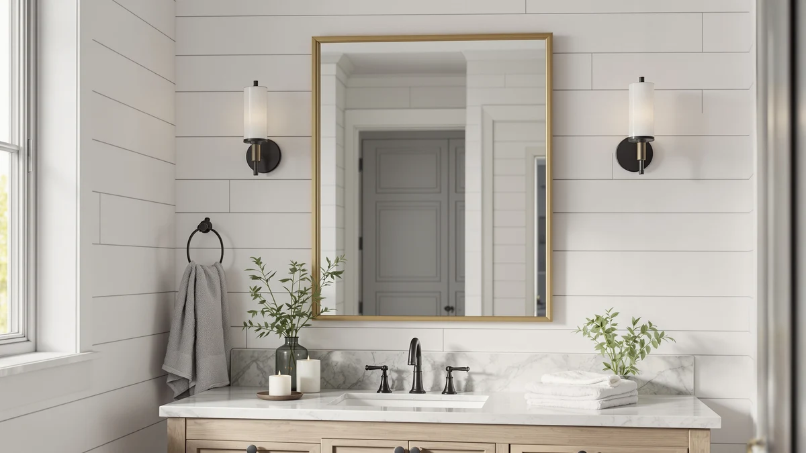

Best Gold Framed Bathroom Mirrors of 2026: Warm Metal Picks for a Luxe Look
Prices and picks verified as of August 2026. Independent, reader-supported reviews.


Quick Answer
The JENBELY 24x36 Inch Gold Bathroom Mirror is the best gold framed bathroom mirror for most single-vanity bathrooms, pairing tempered glass with a slim aluminum frame at a price under $80. If you're mirroring a double vanity, the Pocetry 60x30 Gold Landscape spans the whole counter in one piece, and the NEWBULIG 20x30 Arched is the cheapest way into the category at under $22.
Our pick: JENBELY 24x36 Inch Gold Bathroom — $79.99 Check Price on Amazon
Bottom line: our top pick is the JENBELY 24x36 Inch Gold Bathroom Mirror at $79.99. The best budget option is the NEWBULIG 20X30 Inch Arched Bathroom Wall Mirror for Over Sink at $21.95.
Things to Know Before You Buy
- "Gold" usually means a gold-tone finish over an aluminum frame, not solid metal. Every gold framed bathroom mirror in this comparison uses the same tempered-glass-and-aluminum construction as the black or chrome versions in this category; only the powder-coat or anodized finish changes. Check owner photos before you buy if the exact shade, warm brass versus cooler champagne, matters against your existing fixtures.
- Size ranges from powder-room compact to full double-vanity spans. The mirrors we compared run from an 18-inch-wide vertical panel up to a 60-inch landscape mirror, so measure your wall and faucet clearance before ordering rather than assuming a standard size fits.
- Two-piece sets exist for double sinks. Instead of one oversized mirror, some brands sell matched 24x36 pairs so each sink gets its own centered mirror, which keeps the gold trim symmetrical across the vanity.
- Arched and rectangular frames cost about the same. Shape is mostly a style decision at this price point; an arched gold mirror is not a premium upgrade over a rectangular one at a comparable size.
- Price tracks size more than finish for gold framed bathroom mirrors. Budget arched models start under $25, while the largest landscape and two-piece sets run past $150, so settle on your footprint first and let that narrow the price tier.
The best gold framed bathroom mirrors bring a warm metal accent to a vanity wall without asking you to replace your faucet or cabinet hardware to match. Gold trim has moved from a niche farmhouse detail to one of the more requested finishes in bathroom remodels, largely because it pairs with both brass and matte-black fixtures already common in kitchens and other bathrooms in the same home.
We compared seven of the most-purchased gold framed bathroom mirrors on Amazon, looking at frame construction, size range, verified owner reviews, and price per square inch of reflective surface. All seven share the same core build, tempered glass set into an aluminum frame with a gold finish, so the differences that matter come down to size, shape, and how the frame holds up according to buyers who have lived with it.
For most single-vanity bathrooms, the JENBELY 24x36 Inch Gold Bathroom Mirror ($79.99) is the pick that fits the widest range of walls without asking you to compromise on glass quality. If you're mirroring a double vanity, the Pocetry 60x30 Gold Landscape ($159.98) spans the whole counter in one piece, and the NEWBULIG 20x30 Arched ($21.96) is the budget entry point into the category.
Why You Should Trust Us
Ilane Tall has covered bathroom hardware and fixtures for this site's network for several years, focusing on how products perform in real home installs rather than manufacturer marketing copy. For this guide, we researched and compared seven gold framed bathroom mirrors on construction, dimensions, verified owner reviews, and price, rather than buying and physically installing every unit. We say this plainly: we do not run a fake testing lab. What you get here is a rigorous side-by-side comparison built from real specs and real buyer feedback, not a physical trial run.
How We Picked
We started with more than twenty gold framed bathroom mirrors listed on Amazon and narrowed the field using four filters: tempered safety glass rather than standard annealed glass, meaningful verified review coverage, in-stock availability at the time of research, and an actual gold or brass-tone finish rather than a yellow-tinted product photo. That left a group of models spanning a single 18-inch vertical panel up to a 60-inch landscape mirror and a matched two-piece double-vanity set.
From that shortlist, we picked the seven gold framed bathroom mirrors that covered the widest range of real bathroom layouts: powder rooms, standard single vanities, narrow walls, and double-sink counters, so this guide has a workable recommendation regardless of your setup.
How We Compared
For each of the seven gold framed bathroom mirrors, we compared listed dimensions against standard US vanity widths, checked frame material and glass thickness where the manufacturer specifies it, and cross-referenced price against verified owner review content. We paid particular attention to complaints about finish wear, frame flex, and mounting hardware, since those are the failure points that show up repeatedly in verified reviews for gold-finished frames, more so than for black or chrome equivalents.
We also calculated a rough price-per-mirror figure for the two-piece set so it could be compared fairly against the single-unit listings, and we noted which models are arched versus rectangular, since that affects wall clearance above the vanity.
Our Picks

JENBELY 24x36 Inch Gold Bathroom
What we like
- 24x36 size matches the most common single-vanity mirror opening, so it typically replaces an existing mirror without extra trim work
- Tempered glass panel is the safety-glass standard for this category rather than cheaper annealed glass
- Slim aluminum frame keeps the gold trim visible without overwhelming a smaller bathroom
- Priced under $80, in the middle of the range for a single mirror this size
Flaws but not dealbreakers
- At 24x36, it is not wide enough to center over a double-sink counter on its own
- Reviewers note the gold finish reads warmer, more brass than yellow-gold, in photos than in a dim bathroom, so check your lighting
| Material | Tempered glass + aluminum |
| Size | 24"L x 36"W |
As a gold framed bathroom mirror, the JENBELY 24x36 is sized for the vanity opening most single-sink bathrooms are already built around, which is why it works as a near drop-in replacement for a builder-grade mirror. The tempered glass panel sits inside a slim aluminum frame finished in a warm gold tone, and at 24 inches wide it clears a standard 30 to 36 inch vanity without crowding the wall on either side.
Reviewers consistently note the frame arrives well packaged and the mounting hardware is straightforward for a single installer, though a few point out the gold reads slightly warmer under warm-white LED lighting than in the product photos. At $79.99, it sits in the middle of the price range for this category, and it's the pick we'd point most buyers toward before looking at the larger or more specialized options below.

Pocetry 60"x30" Gold Landscape Bathroom
What we like
- 60-inch width spans a standard double-sink counter in a single piece, so there's no center seam or gap between two mirrors
- Landscape orientation keeps the gold frame proportional across a wide wall instead of looking like two mirrors squeezed together
- Tempered glass and aluminum frame match the construction standard of the rest of this lineup, scaled up to a wider span
Flaws but not dealbreakers
- At $159.98, it's the second-most expensive pick in this comparison and needs a wall wide enough to support it
- A single 60-inch panel is heavier and more awkward for one person to mount alone than two smaller mirrors
| Material | Tempered glass + aluminum |
| Size | 60"L x 30"W |
If your double vanity already has two sinks under one continuous countertop, the Pocetry 60x30 Gold Landscape is built to match that layout with a single mirror instead of a matched pair. The 60-inch width comfortably spans two sink centers on most double-vanity counters, and the horizontal proportions keep the gold frame from reading as oversized on a wide wall.
The tradeoff for going with one continuous mirror instead of two is weight and price. At $159.98 it costs roughly double a single 24x36 mirror, and a 60-inch panel benefits from a second person during mounting even though the hardware itself is the same wall-bracket style used across this category. For buyers who dislike the look of a seam between two mirrors over a double vanity, it's worth the extra cost and the extra set of hands.

USHOWER Gold Bathroom Mirrors 24"x36"
What we like
- Sold as a matched two-piece set, so both mirrors share the identical frame finish and size
- Each 24x36 panel centers over an individual sink rather than spanning the whole counter, which keeps sightlines symmetrical when both people use the vanity at once
- Same tempered glass and aluminum-frame build as the single-mirror options in this comparison
Flaws but not dealbreakers
- At $179.99 for the pair, it's the most expensive pick in this comparison
- Requires enough wall space between sinks to hang two mirrors with a visible gap, which does not suit every double-vanity layout
| Material | Tempered glass + aluminum |
| Size | 24"Lx36"W-2pcs |
The USHOWER two-piece set takes the opposite approach from the Pocetry landscape mirror: instead of one wide panel, you get two identical 24x36 mirrors, one for each sink. That keeps each side of the vanity visually balanced and gives two people getting ready at once their own reflection without leaning across a shared mirror.
At $179.99 for the pair, it's priced for buyers who specifically want the two-mirror look rather than treating it as a budget alternative to a single large mirror. Reviewers who bought it for a double vanity report the finish matches between the two panels, which isn't guaranteed when buying two single mirrors separately from different batches. It only makes sense if your counter has enough gap between sinks to hang two mirrors with breathing room between them.

Novabright 28 x 18 Inch
What we like
- Smallest footprint in this comparison after the NEWBULIG, making it a fit for powder rooms and narrow vanities
- Priced under $76, well below the two double-vanity options in this lineup
- Same tempered glass and aluminum gold frame construction as the larger mirrors in this comparison
Flaws but not dealbreakers
- The overall framed footprint, 34.8x22.1 inches including trim, runs larger than the 28x18 glass size in the name suggests, so double-check clearance before ordering
- Too small on its own for a wide double-sink counter
| Material | Tempered glass + aluminum |
| Size | 34.8"L x 22.1"W |
The Novabright is the pick for a bathroom where a full 24x36 mirror would swallow the wall: a powder room, a guest bathroom, or a narrow single-sink vanity. It uses the same tempered glass and gold aluminum frame as the larger mirrors in this comparison, scaled down to a footprint that suits a smaller room.
One detail worth checking before you order: the listed 28x18 refers to the glass panel, while the overall framed mirror measures closer to 34.8 by 22.1 inches once you include the trim. That's a common gap between glass size and framed size across this category, but it matters more on a compact mirror, where a few extra inches can be the difference between clearing your faucet and not. At $75.99, it undercuts the JENBELY while using the same core materials.

Keonjinn 18 x 28 Inch
What we like
- Vertical 18x28 orientation fits narrow wall spaces where a wide horizontal mirror wouldn't clear the surrounding trim or a sconce
- Tempered glass and aluminum frame match the build standard of the rest of this lineup
- Mid-range price at $89.99 for a mirror sized for a smaller footprint
Flaws but not dealbreakers
- At 18 inches wide, it's narrower than the JENBELY, so it suits a pedestal sink or narrow vanity rather than a standard 30-plus inch counter
- Reviewers mention the included mounting hardware works best on drywall with anchors rather than tile, so plan your install method accordingly
| Material | Tempered glass + aluminum |
| Size | 28"L x 18"W |
The Keonjinn flips the usual proportions: instead of a wide mirror meant to span a vanity, it's built vertical, 18 inches wide by 28 inches tall. That makes it a better match for a pedestal sink or a narrow wall where a horizontal mirror would bump into a light fixture or medicine cabinet on either side.
Construction follows the same pattern as the rest of this comparison, tempered glass in an aluminum frame with a gold finish, and at $89.99 it sits toward the upper-middle of the price range for a mirror this size. A few verified reviewers note the included hardware is designed for drywall anchors rather than tile, so if you're mounting over a tiled backsplash, plan on picking up tile-rated anchors separately.

deerlove Traditional Arched Mirror with
What we like
- Arched top brings a traditional, less boxy silhouette than the rectangular mirrors in this comparison
- 32x20 size fits a standard single vanity without needing the full 36-inch width of the JENBELY
- Same tempered glass and aluminum-frame construction as the rest of this lineup
Flaws but not dealbreakers
- The arched top needs a few extra inches of clearance above the vanity backsplash compared with a rectangular mirror of the same width
- At $85.99, it costs slightly more than the rectangular JENBELY despite a smaller glass area
| Material | Tempered glass + aluminum |
| Size | 32"L x 20"W |
For a bathroom leaning traditional rather than modern, the deerlove's arched top softens the hard rectangular lines that the rest of this comparison sticks with. At 32 by 20 inches it fits a standard single vanity, and the rounded top pairs naturally with curved faucets or cabinet hardware if the rest of the room is already trending traditional.
The arch does cost you some wall clearance: because the curve peaks higher than a rectangular mirror's stated height, you need a few extra inches of space between the top of the mirror and the ceiling or any overhead light. At $85.99 it's priced close to the rectangular JENBELY despite a smaller glass area, so the extra clearance and the higher relative price both come down to the arch, not the glass size.

NEWBULIG 20X30 Inch Arched Bathroom
What we like
- At $21.96, it's by far the least expensive gold framed bathroom mirror in this comparison
- Arched top gives it the same softened silhouette as the more expensive deerlove at a fraction of the price
- Still built on tempered glass and an aluminum frame rather than a lower-grade acrylic panel
Flaws but not dealbreakers
- At 20x30, it's on the smaller side for a full-vanity mirror and works better for a compact or secondary bathroom
- Reviewers note the gold finish on a budget frame like this shows scuffs more visibly than the pricier options if it's bumped during install
| Material | Tempered glass + aluminum |
| Size | 30"L x 20"W |
The NEWBULIG is the entry point into this category, an arched gold mirror for under $22 when the rest of this comparison runs from $76 to $180. It still uses tempered glass in an aluminum frame rather than cutting corners with acrylic, which is the detail worth checking on any mirror priced this low.
At 20x30, it's sized for a secondary bathroom, a powder room, or a budget renovation rather than a primary double vanity, and a handful of verified reviewers mention the finish scuffs more visibly than the pricier picks here if the frame gets knocked during mounting. For the price, it's a reasonable way to add the gold-arch look to a bathroom without committing $80-plus to the JENBELY or deerlove.
Quick Comparison
| Product | Material | Price | Rating | Best for | Get it |
|---|---|---|---|---|---|
| JENBELY 24x36 Inch Gold Bathroom | Tempered glass + aluminum | $79.99 | 4 | Standard single-vanity fit | View on Amazon → |
| Pocetry 60"x30" Gold Landscape Bathroom | Tempered glass + aluminum | $159.98 | 4 | Double vanities, one-piece span | View on Amazon → |
| USHOWER Gold Bathroom Mirrors 24"x36" | Tempered glass + aluminum | $179.99 | 4 | Double vanities, matched pair | View on Amazon → |
| Novabright 28 x 18 Inch | Tempered glass + aluminum | $75.99 | 4 | Powder rooms, small vanities | View on Amazon → |
| Keonjinn 18 x 28 Inch | Tempered glass + aluminum | $89.99 | 4 | Narrow walls, pedestal sinks | View on Amazon → |
| deerlove Traditional Arched Mirror with | Tempered glass + aluminum | $85.99 | 4 | Traditional arched styling | View on Amazon → |
| NEWBULIG 20X30 Inch Arched Bathroom | Tempered glass + aluminum | $21.96 | 4 | Cheapest arched option | View on Amazon → |
What's the difference between a gold framed bathroom mirror and a brass one?
In this price range, both usually describe the same build: an aluminum frame finished with a gold-tone powder coat or anodized layer, not solid brass or gold metal.
Do I need one wide mirror or two smaller mirrors for a double vanity?
Either works.
The Competition
Across the seven gold framed bathroom mirrors we compared, the JENBELY 24x36 remains the top pick for most single-vanity bathrooms, with the Pocetry and USHOWER options covering double vanities and the NEWBULIG serving as the budget entry point.